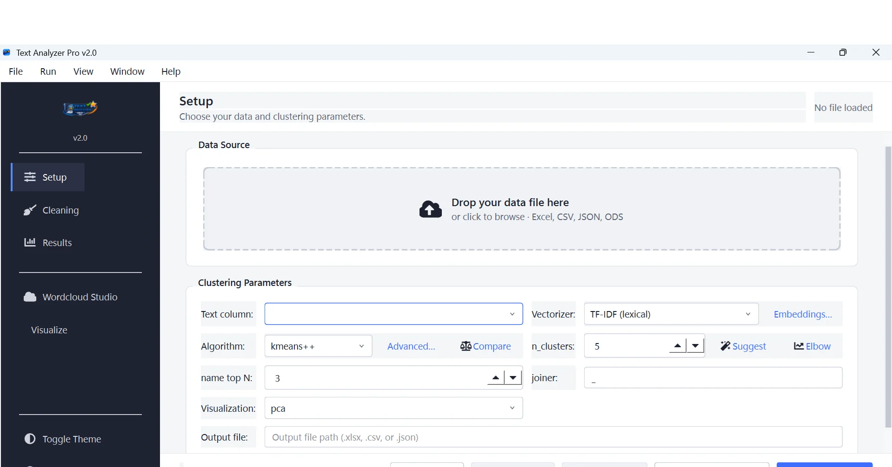
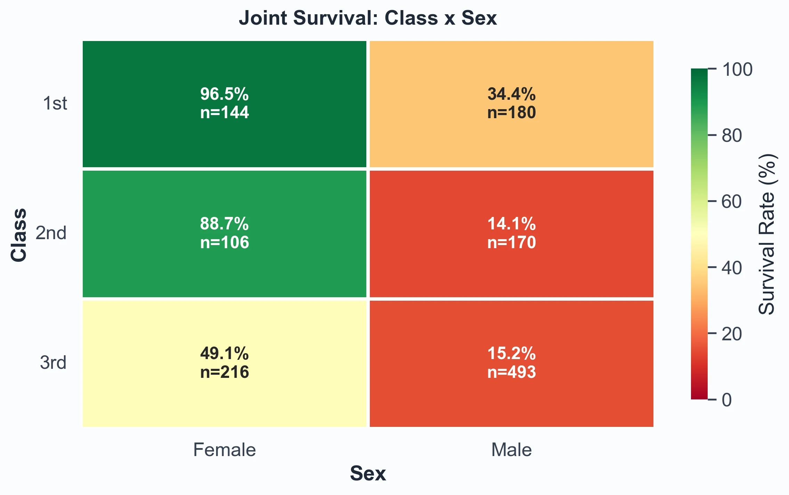
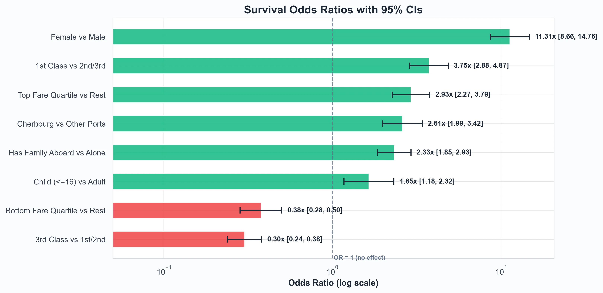

4+
Years in data and delivery
Data & BI Analyst Kolkata, India
Complex data, made clear enough to act on.
I turn structured and unstructured data into rigorous analysis, useful dashboards, and stakeholder stories that move decisions forward.
Currently turning analytics questions into reporting systems at Accenture.
4+
Years in data and delivery
100+
Datasets analyzed
15%
Estimated efficiency lift
7
Verified credentials
01 / Selected work
Two independent projects, from a private desktop NLP workflow to a reproducible statistical study.

Project 01
Private, analyst-friendly text clustering for spreadsheet data.


Project 02
A familiar dataset pushed beyond familiar conclusions.
02 / Experience
From software delivery foundations to business-facing analysis, reporting, and data storytelling.
08/2023 - Present
Accenture / Kolkata
07/2022 - 08/2023
Accenture / Kolkata
03/2022 - 05/2022
Accenture
03 / Toolkit
A practical stack for finding patterns, checking the work, and making the result legible.
01
Tableau, Power BI, Excel, dashboard design, stakeholder reporting
02
SQL, Python, descriptive analysis, text analysis, statistical testing, data QA
03
Internal tools, workflow automation, AI-assisted development, GitHub Copilot, Claude Code
04
Cross-functional collaboration, insight presentations, Agile delivery, reproducible analysis
Verified credentials
Claude Certified Architect: FoundationsAnthropic ↗ Google AI SpecializationGoogle / Coursera ↗ Power BI Data Analyst AssociateMicrosoft / PL-300 ↗ Associate Data PractitionerGoogle Cloud ↗ Professional Data EngineerGoogle Cloud ↗ Azure FundamentalsMicrosoft / AZ-900 ↗ Security, Compliance, and Identity FundamentalsMicrosoft / SC-900 ↗Education
2019 - 2022
2016 - 2019
04 / Contact
I’m interested in analysis, BI, and reporting work where rigor matters as much as clarity.